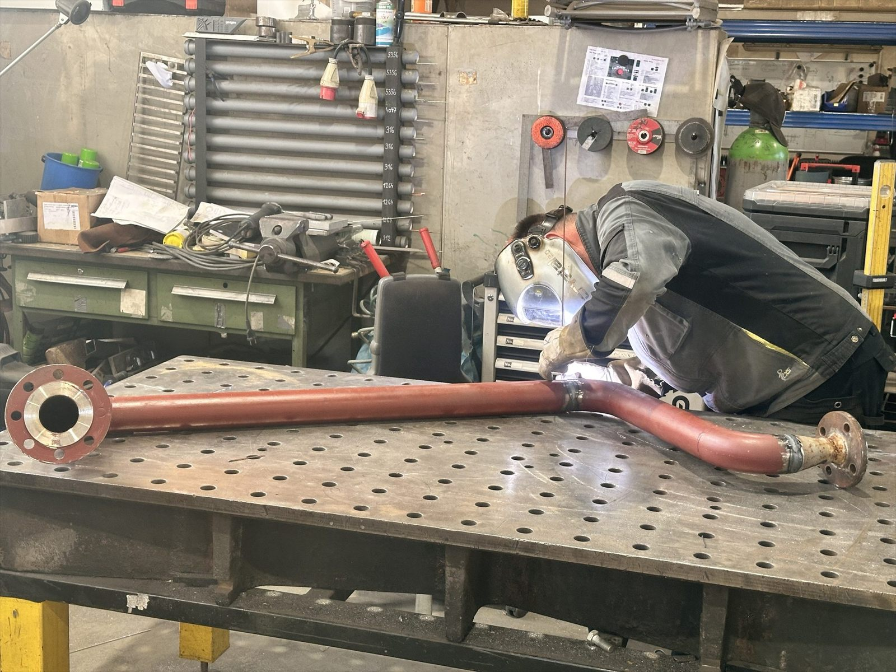

Svařování v dílně i u zákazníka
Svářeči mají platné zkoušky podle ČSN EN ISO 9606, nad prací dohlíží svářečský technolog. Sváříme podle materiálu a požadované jakosti svaru.
- Kde V dílně i u vás na místě
- Normy ČSN EN ISO 9606
- Dozor Svářečský technolog